소방설비기사(전기분야) (2017-03-05 기출문제)
1과목: 소방원론
1. 고층 건축물 내 연기거동 중 굴뚝효과에 영향을 미치는 요소가 아닌 것은?
- 건물 내ㆍ외의 온도차
- 화재실의 온도
- 건물의 높이
- 층의 면적
(정답률: 70%)

2. 섭씨 30도는 랭킨(Rankine)온도로 나타내면 몇 도인가?
- 546도
- 515도
- 498도
- 463도
(정답률: 69%)
3. 물질의 연소범위와 화재 위험도에 대한 설명으로 틀린 것은?
- 연소범위의 폭이 클수록 화재 위험이 높다.
- 연소범위의 하한계가 낮을수록 화재 위험이 높다.
- 연소범위의 상한계가 높을수록 화재 위험이 높다.
- 연소범위의 하한계가 높을수록 화재 위험이 높다.
(정답률: 85%)
4. A급, B급, C급 화재에 사용이 가능한 제3종 분말 소화약제의 분자식은?
- NaHCO3
- KHCO3
- NH4H2PO4
- Na2CO3
(정답률: 92%)
5. 할론 (Halon) 1301의 분자식은?
- CH3Cl
- CH3Br
- CF3Cl
- CF3Br
(정답률: 86%)
6. 소화약제의 방출수단에 대한 설명으로 가장 옳은 것은?
- 액체 화학반응을 이용하여 발생되는 열로 방출한다.
- 기체의 압력으로 폭발, 기화작용 등을 이용하여 방출한다.
- 외기의 온도, 습도, 기압 등을 이용하여 방출한다.
- 가스압력, 동력, 사람의 손 등에 의하여 방출한다.
(정답률: 85%)
7. 다음 중 가연성 가스가 아닌 것은?
- 일산화탄소
- 프로판
- 아르곤
- 수소
(정답률: 85%)
8. 1기압, 100℃에서의 물 1g의 기화잠열은 약 몇 cal 인가?
- 425
- 539
- 647
- 734
(정답률: 91%)
9. 건축물의 화재 시 피난자들의 집중으로 패닉(panic) 현상이 일어날 수 있는 피난방향은?
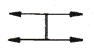
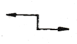
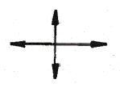
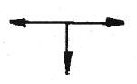
(정답률: 89%)
10. 연기의 감광계수(m-1)에 대한 설명으로 옳은 것은?
- 0.5는 거의 앞이 보이지 않을 정도이다.
- 10은 화재 최성기 때의 농도이다.
- 0.5는 가시거리가 20~30m 정도이다.
- 10은 연기감지기가 작동하기 직전의 농도이다.
(정답률: 82%)
11. 위험물의 저장 방법으로 틀린 것은?
- 금속나트륨 - 석유류에 저장
- 이황화탄소 - 수조 물탱크에 저장
- 알킬알루미늄 - 벤젠액에 희석하여 저장
- 산화프로필렌 - 구리 용기에 넣고 불연성 가스를 봉입하여 저장
(정답률: 68%)
12. 건축방화계획에서 건축구조 및 재료를 불연화하여 화재를 미연에 방지하고자 하는 공간적 대응방법은?
- 회피성 대응
- 도피성 대응
- 대항성 대응
- 설비적 대응
(정답률: 64%)
13. 할론 가스 45kg과 함께 기동가스로 질소2kg을 충전하였다. 이 때 질소가스의 몰분율은? (단, 할론 가스의 분자량은 149이다.)
- 0.19
- 0.24
- 0.31
- 0.39
(정답률: 51%)
14. 다음 중 착화온도가 가장 낮은 것은?
- 에틸알코올
- 톨루엔
- 등유
- 가솔린
(정답률: 58%)
15. B급 화재 시 사용할 수 없는 소화방법은?
- CO2 소화약제로 소화한다.
- 봉상 주수로 소화한다.
- 3종 분말약제로 소화한다.
- 단백포로 소화한다.
(정답률: 83%)
16. 가연물의 제거와 가장 관련이 없는 소화방법은?
- 촛불을 입김으로 불어서 끈다.
- 산불 화재 시 나무를 잘라 없앤다.
- 팽창 진주암을 사용하여 진화한다.
- 가스화재 시 중간밸브를 잠근다.
(정답률: 90%)
17. 유류 저장탱크의 화재에서 일어날 수 있는 현상이 아닌 것은?
- 플래시 오버(Flash Over)
- 보일 오버(Boil Over)
- 슬롭 오버(Slop Over)
- 후로스 오버(Froth Over)
(정답률: 76%)
18. 분말소화약제 중 탄산수소칼륨(KHCO3)과 요소(CO(NH2)2)와의 반응물을 주성분으로 하는 소화약제는?
- 제1종 분말
- 제2종 분말
- 제3종 분말
- 제4종 분말
(정답률: 72%)
19. 소화효과를 고려하였을 경우 화재 시 사용할 수 있는 물질이 아닌 것은?
- 이산화탄소
- 아세틸렌
- Halon 1211
- Halon 1301
(정답률: 89%)
20. 인화성 액체의 연소점, 인화점, 발화점을 온도가 높은 것부터 옳게 나열한 것은?
- 발화점> 연소점> 인화점
- 연소점> 인화점> 발화점
- 인화점> 발화점> 연소점
- 인화점> 연소점> 발화점
(정답률: 72%)
2과목: 소방전기회로
21. 최대눈금이 70V 인 직류전압계에 5kΩ 의 배율기를 접속하여 전압의 최대측정치가 350V 라면 내부 저항은 몇 kΩ 인가?
- 0.8
- 1
- 1.25
- 20
(정답률: 65%)
22. 발전기에서 유도기전력의 방향을 나타내는 법칙은?
- 페러데이의 전자유도법칙
- 플레밍의 오른손법칙
- 암페어의 오른나사법칙
- 플레밍의 왼손법칙
(정답률: 75%)
23. 다음은 논리식들 중 틀린 것은?
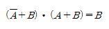
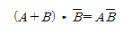
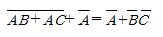
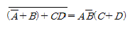
(정답률: 65%)
24. 길이 1m의 철심(비투자율 μs=700) 자기회로에 2mm 의 공극이 생겼다면 자기저항은 몇 배 증가하는가? (단, 각 부의 단면적은 일정하다.)
- 1.4
- 1.7
- 2.4
- 2.7
(정답률: 49%)
25. 빛이 닿으면 전류가 흐르는 다이오드로 광량의 변화를 전류값으로 대치하므로 광센서에 주로 사용하는 다이오드는?
- 제너다이오드
- 터널다이오드
- 발광다이오드
- 포토다이오드
(정답률: 78%)
26. 3상 직권 정류자 전동기에서 중간 변압기를 사용하는 이유 중 틀린 것은?
- 경부하시 속도의 이상 상승 방지
- 실효 권수비 선정 조정
- 전원전압의 크기에 관계없이, 정류에 알맞은 회전자전압 선택
- 회전자 상수의 감소
(정답률: 71%)
27. 피드백제어계에서 제어요소에 대한 설명 중 옳은 것은?
- 조작부와 검출부로 구성되어 있다.
- 조절부와 변환부로 구성되어 있다.
- 동작신호를 조작량으로 변화시키는 요소이다.
- 목표값에 비례하는 신호를 발생하는 요소이다.
(정답률: 67%)
28. 균등 눈금을 사용하며 소비전력이 적게 소요되고 정확도가 높은 지시계기는?
- 가동 코일형 계기
- 전류력계형 계기
- 정전형 계기
- 열전형 계기
(정답률: 63%)
29. 그림과 같은 유접점 회로의 논리식은?
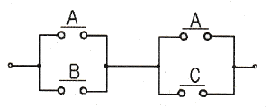
- A + BC
- AB + C
- B + AC
- AB + BC
(정답률: 83%)
30. 50kW의 전력의 안테나에서 사방으로 균일하게 방사될 때, 안테나에서 1km 거리에 있는 점에서의 전계의 실효값은 약 몇 V/m 인가?
- 0.87
- 1.22
- 1.73
- 3.98
(정답률: 49%)
31. 그림과 같은 반파정류회로에 스위치 A를 사용하여 부하 저항 RL을 떼어 냈을 경우, 콘덴서 C의 충전전압은 몇 V 인가?
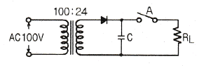
- 12π
- 24π
- 12√2
- 24√2
(정답률: 64%)
32. 그림과 같은 교류브리지의 평형조건으로 옳은 것은?
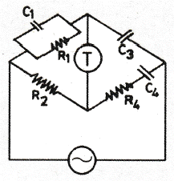
- R2C4 = R1C3, R2C1 = R4C3
- R1C1 = R4C4, R2C3 = R1C1
- R2C4 = R4C3, R1C3 = R2C1
- R1C1 = R4C4, R2C3 = R1C4
(정답률: 64%)
33. MOSFET(금속-산화물 반도체 전계효과 트랜지스터)의 특성으로 틀린 것은?
- 2차 항복이 없다.
- 직접도가 낮다.
- 소전력으로 작동한다.
- 큰 입력저항으로 게이트 전류가 거의 흐르지 않는다.
(정답률: 63%)
34. 인덕턴스가 0.5H 인 코일의 리액턴스가 753.6Ω일 때 주파수는 약 몇 Hz 인가?
- 120
- 240
- 360
- 480
(정답률: 64%)
35. 페루프 제어의 특징에 대한 설명으로 옳은 것은?
- 외부의 변화에 대한 영향을 증가시킬 수 있다.
- 제어기 부품의 성능 차이에 따라 영향을 많이 받는다.
- 대역폭이 증가한다.
- 정확도와 전체 이득이 증가한다.
(정답률: 57%)
36. 20℃의 물 2L를 64℃가 되도록 가열하기 위해 400W의 온수기를 20분 사용하였을 때 이 온수기의 효율은 약 몇 %인가?
- 27
- 59
- 77
- 89
(정답률: 56%)
37. PD(비례 미분) 제어 동작의 특징으로 옳은 것은?
- 잔류편차 제거
- 간헐현상 제거
- 불연속 제어
- 응답 속응성 개선
(정답률: 63%)
38. 정현파 전압의 평균값과 최대값의 관계식 중 옳은 것은?
- Vav = 0.707Vm
- Vav = 0.840Vm
- Vav = 0.637Vm
- Vav = 0.956Vm
(정답률: 69%)
39. 열팽창식 온도계가 아닌 것은?
- 열전대 온도계
- 유리 온도계
- 바이메탈 온도계
- 압력식 온도계
(정답률: 70%)
40. 동기발전기의 병렬조건으로 틀린 것은?
- 기전력의 크기가 같을 것
- 기전력의 위상이 같을 것
- 기전력의 주파수가 같을 것
- 극수가 같을 것
(정답률: 79%)
3과목: 소방관계법규
41. 관계인이 예방규정을 정하여야 하는 제조소등의 기준이 아닌 것은?
- 지정수량의 10배 이상의 위험물을 취급하는 제조소
- 지정수량의 50배 이상의 위험물을 취급하는 옥외저장소
- 지정수량의 150배 이상의 위험물을 취급하는 옥내저장소
- 지정수량의 200배 이상의 위험물을 취급하는 옥외탱크저장소
(정답률: 73%)
42. 특정소방대상물이 증축 되는 경우 기존 부분에 대해서 증축 당시의 소방시설의 설치에 관한 대통령령 또는 화재안전기준을 적용하지 않는 경우가 아닌 것은?
- 증축으로 인하여 천장ㆍ바닥ㆍ벽 등에 고정되어 있는 가연성 물질의 양이 줄어드는 경우
- 자동차 생산공장 등 화재 위험이 낮은 특정소방대상물 내부에 연면적 33m2 이하의 직원 휴게실을 증축하는 경우
- 기존 부분과 증축 부분이 갑종 방화문(국토교통부장관이 정하는 기준에 적합한 자동방화셔터를 포함)으로 구획되어 있는 경우
- 자동차 생산공장 등 화재 위험이 낮은 특정소방대상물에 캐노피(3면 이상에 벽이 없는 구조의 캐노피)를 설치하는 경우
(정답률: 57%)
43. 대통령령으로 정하는 특정소방대상물 소방시설공사의 완공검사를 위하여 소방본부장이나 소방서장의 현장확인 대상 범위가 아닌 것은?(오류 신고가 접수된 문제입니다. 반드시 정답과 해설을 확인하시기 바랍니다.)
- 문화 및 집회시설
- 수계 소화설비가 설치되는 것
- 연면적 10000m2 이상이거나 11층 이상인 특정소방대상물(아파트는 제외)
- 가연성가스를 제조ㆍ저장 또는 취급하는 시설중 지상에 노출된 가연성가스탱크의 저장용량의 합계가 1000톤 이상인 시설
(정답률: 62%)
44. 소화난이도등급 Ⅲ인 지하탱크저장소에 설치하여야 하는 소화설비의 설치기준으로 옳은 것은?
- 능력단위 수치가 3 이상의 소형 수동식소화기등 1개 이상
- 능력단위 수치가 3 이상의 소형 수동식소화기등 2개 이상
- 능력단위 수치가 2 이상의 소형 수동식소화기등 1개 이상
- 능력단위 수치가 2 이상의 소형 수동식소화기등 2개 이상
(정답률: 68%)
45. 소방특별조사의 연기를 신청하려는 자는 소방특별조사 시작 며칠 전까지 국민안전처장관, 소방본부장 또는 소방서장에게 소방특별조사 연기신청서에 증명서류를 첨부하여 제출해야 하는가? (단, 천재지변 및 그 밖에 대통령령으로 정하는 사유로 소방특별조사를 받기 곤란한 경우이다.)
- 3
- 5
- 7
- 10
(정답률: 56%)
46. 시장지역에서 화재로 오인할 만한 우려가 있는 불을 피우거나 연막소독을 하려는 자가 소방본부장 또는 소방서장에게 신고를 하지 아니하여 소방자동차를 출동하게 한 자에 대한 과태료 부과금액 기준으로 옳은 것은?
- 20만원 이하
- 50만원 이하
- 100만원 이하
- 200만원 이하
(정답률: 62%)
47. 국민안전처장관, 소방본부장 또는 소방서장이 소방특별조사 조치명령서를 해당 소방대상물의 관계인에게 발급하는 경우가 아닌 것은?
- 소방대상물의 신축
- 소방대상물의 개수
- 소방대상물의 이전
- 소방대상물의 제거
(정답률: 66%)
48. 대통령령 또는 화재안전기준이 변경되어 그 기준이 강화되는 경우에 기존 특정소방대상물의 소방시설에 대하여 변경으로 강화된 기준을 적용하여야 하는 소방시설은?
- 비상경보설비
- 비상콘센트설비
- 비상방송설비
- 옥내소화전설비
(정답률: 73%)
49. 출동한 소방대의 화재진압 및 인명구조ㆍ구급 등 소방활동 방해에 따른 벌칙이 5년이하의 징역 또는 3000만원 이하의 벌금에 처하는 행위가 아닌 것은?(관련 규정 개정전 문제로 여기서는 기존 정답인 2번을 누르면 정답 처리됩니다. 자세한 내용은 해설을 참고하세요.)
- 위력을 사용하여 출동한 소방대의 구급활동을 방해하는 행위
- 화재진압을 마치고 소방서로 복귀 중인 소방자동차의 통행을 고의로 방해하는 행위
- 출동한 소방대원에게 협박을 행사하여 구급활동을 방해하는 행위
- 출동한 소방대의 소방장비를 파손하거나 그 효용을 해하여 구급활동을 방해하는 행위
(정답률: 84%)
50. 화재예방, 소방시설 설치ㆍ유지 및 안전관리에 관한 법률상 특정소방대상물 중 오피스텔이 해당하는 것은?
- 숙박시설
- 업무시설
- 공동주택
- 근린생활시설
(정답률: 85%)
51. 소방시설업에 대한 행정처분 기준 중 1차처분이 영업정지 3개월이 아닌 경우는?
- 국가, 지방자치단체 또는 공공기관이 발주하는 소방시설의 설계ㆍ감리업자 선정에 따른 사업수행능력 평가에 관한 서류를 위조하거나 변조하는 등 거짓이나 그 밖의 부정한 방법으로 입찰에 참여한 경우
- 소방시설업의 감독을 위하여 필요한 보고나 자료제출 명령을 위반하여 보고 또는 자료 제출을 하지 아니하고나 거짓으로 보고 또는 자료 제출을 한 경우
- 정당한 사유 없이 출입ㆍ검사업무에 따른 관계 공무원의 출입 또는 검사ㆍ조사를 거부ㆍ방해 또는 기피한 경우
- 감리업자의 감리 시 소방시설공사가 설계도서에 맞지 아니하여 공사업자에게 공사의 시정 또는 보완 등의 요구를 하였으나 따르지 아니한 경우
(정답률: 46%)
52. 지정수량 미만인 위험물의 저장 또는 취급에 관한 기술상의 기준은 무엇으로 정하는가?
- 대통령령
- 총리령
- 국민안전처장관령
- 시ㆍ도의 조례
(정답률: 68%)
53. 소방시설기준 적용의 특례 중 특정소방대상물의 관계인이 소방시설을 갖추어야 함에도 불구하고 관련 소방시설을 설치하지 아니할 수 있는 소방시설의 범위로 옳은 것은? (단, 화재 위험도가 낮은 특정소방대상물로서 석재, 불연성금속, 불연성 건축재료 등의 가공공장ㆍ기계조립공장ㆍ주물공장 또는 불연성 물품을 저장하는 창고이다.)
- 옥외소화전 및 연결살수설비
- 연결송수관설비 및 연결살수설비
- 자동화재탐지설비, 상수도소화용수설비 및 연결살수설비
- 스프링클러설비, 상수도소화용수설비 및 연결살수설비
(정답률: 47%)
54. 소방용수시설 금수탑 개폐밸브의 설치기준으로 옳은 것은?
- 지상에서 1.0m 이상 1.5m 이하
- 지상에서 1.5m 이상 1.7m 이하
- 지상에서 1.2m 이상 1.8m 이하
- 지상에서 1.5m 이상 2.0m 이하
(정답률: 81%)
55. 옥내저장소의 위치ㆍ구조 및 설비의 기준 중 지정수량의 몇 배 이상의 저장창고(제6류 위험물의 저장창고 제외)에 피뢰침을 설치해야 하는가? (단, 저장창고 주위의 상황이 안전상 지장이 없는 경우는 제외한다.)
- 10배
- 20배
- 30배
- 40배
(정답률: 75%)
56. 우수품질인증을 받지 아니한 제품에 우수품질 인증표시를 하거나 우수품질인증 표시를 위조 또는 변조하여 사용한 자에 대한 벌칙기준은?(2017년 12월 26일 개정된 규정 적용됨)
- 300만원 이하의 벌금
- 500만원 이하의 벌금
- 1000만원 이하의 벌금
- 2000만원 이하의 벌금
(정답률: 74%)
57. 다음 조건을 참고하여 숙박시설이 있는 특정소방대상물의 수용인원 산정 수로 옳은 것은?
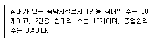
- 33
- 40
- 43
- 46
(정답률: 84%)
58. 성능위주설계를 실시하여야 하는 특정소방대상물의 범위 기준으로 틀린 것은?
- 연면적 200000m2 이상인 특정소방대상물 (아파트등은 제외)
- 지하층을 포함한 층수가 30층 이상인 특정소방대상물 (아파트등은 제외)
- 건축물의 높이가 100m 이상인 특정소방대상물 (아파트등은 제외)
- 하나의 건축물에 영화상영관이 5개 이상인 특정소방대상물
(정답률: 72%)
59. 소방본부장 또는 소방서장은 건축허가등의 동의요구서류를 접수한 날부터 최대 며칠 이내에 건축허가등의 동의여부를 회신하여야 하는가? (단, 허가 신청한 건축물은 지상으로부터 높이가 200m 인 아파트이다.)
- 5일
- 7일
- 10일
- 15일
(정답률: 64%)
60. 총리령으로 정하는 고급감리원 이상의 소방공사 감리원의 소방시설공사 배치 현장기준으로 옳은 것은?(관련 규정 개정전 문제로 여기서는 기존 정답인 2번을 누르면 정답 처리 됩니다. 자세한 내용은 해설을 참고하세요.)
- 연면적 5000m2 이상 30000m2 미만인 특정소방대상물의 공사 현장
- 연면적 30000m2 이상 200000m2 미만인 아파트의 공사 현장
- 연면적 30000m2 이상 200000m2 미만인 특정소방대상물(아파트는 제외)의 공사 현장
- 연면적 200000m2 이상인 특정소방대상물의 공사 현장
(정답률: 73%)
4과목: 소방전기시설의 구조 및 원리
61. 감지기의 설치기준 중 옳은 것은?
- 보상식 스포트형 감지기는 정온점이 감지기 주위의 평상 시 최고 온도보다 20℃ 이상 높은 것으로 설치할 것
- 정온식 감지기는 주방ㆍ보일러실 등으로서 다량의 화기를 취급하는 장소에 설치하되, 공칭작동온도가 최고주위온도보다 30℃ 이상 높은 것으로 설치할 것
- 스포트형 감지기는 15°이상 경사되지 아니하도록 부착할 것
- 공기관식 차동식분포형 감지기의 검출부는 45°이상 경사되지 아니하도록 부착할 것
(정답률: 65%)
62. 휴대용비상조명등의 설치기준 중 틀린 것은?
- 영화상영관에는 보행거리 50m 이내마다 3개이상 설치할 것
- 지하상가 및 지하역사에는 보행거리 30m 이내마다 3개 이상 설치할 것
- 숙박시설 또는 다중이용업소에는 객실 또는 영업장안의 구획된 실마다 잘 보이는 곳에 1개 이상 설치할 것
- 건전지 및 충전식 밧데리의 용량은 20분 이상 유효하게 사용할 수 있는 것으로 할 것
(정답률: 71%)
63. 경사강하식 구조대의 구조 기준 중 틀린 것은?
- 손잡이는 출구 부근에 좌우 각 3개 이상 균일한 간격으로 견고하게 부착하여야 한다.
- 입구틀 및 취부틀의 입구는 지름 30cm 이상의 구체가 통과할 수 있어야 한다.
- 구조대 본체의 활강부는 낙하방지를 위해 포를 2중구조로 하거나 또는 망목의 변의 길이가 8cm 이하인 망을 설치하여야 한다.
- 구조대본체의 끝부분에는 길이 4m 이상, 지름4mm 이상의 유도선을 부착하여야 하며, 유도선 끝에는 중량 3N(300g) 이상의 모래주머니 등을 설치하여야 한다.
(정답률: 62%)
64. 전기사업자로부터 저압으로 수전하는 경우 비상전원설비로 옳은 것은?
- 방화구획형
- 전용배전반(1ㆍ2종)
- 큐비클형
- 옥외개방형
(정답률: 69%)
65. 비상콘센트의 배치 기준 중 바닥면적이 1000m2미만인 층은 계단의 출입구로부터 몇m 이내에 설치하여야 하는가?
- 1.5
- 5
- 7
- 10
(정답률: 74%)
66. 광원점등방식 피난유도선의 설치기준 중 틀린 것은?
- 피난유도 표시부는 50cm 이내의 간격으로 연속되도록 설치하되 실내장식물 등으로 설치가 곤란할 경우 2m 이내로 설치할 것
- 피난유도 표시부는 바닥으로부터 높이 1m 이하의 위치 또는 바닥 면에 설치할 것
- 피난유도 제어부는 조작 및 관리가 용이 하도록 바닥으로부터 0.8m 이상 1.5m 이하의 높이에 설치할 것
- 구획된 각 실로부터 주 출입구 또는 비상구까지 설치할 것
(정답률: 69%)
67. 자동화재속보설비의 속보기는 연동 또는 수동작동에 의한 다이얼링 후 소방관서와 전화접속이 이루어지지 않는 경우에는 최초 다이얼링을 포함하여 몇 회 이상 반복적으로 접속을 위한 다이얼링이 이루어져야 하는가? (단, 이 경우 매회 다이얼링 완료 후 호출은 30초 이상 지속한다.)
- 3회
- 5회
- 10회
- 20회
(정답률: 59%)
68. 무선통신보조설비의 설치제외 기준 중 다음 ( )안에 알맞은 것으로 연결된 것은?
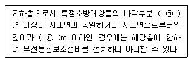
- ㉠ 2, ㉡ 1
- ㉠ 2, ㉡ 2
- ㉠ 3, ㉡ 1
- ㉠ 3, ㉡ 2
(정답률: 80%)
69. 5~10회로까지 사용할 수 있는 누전경보기의 집합형 수신기 내부결선도에서 그 구성요소가 아닌 것은?
- 제어부
- 조작부
- 증폭부
- 도통시험 및 동작시험부
(정답률: 53%)
70. 무선통신보조설비의 증폭기 전면에 주회로의 전원이 정상 인지의 여부를 표시할 수 있도록 설치하는 것으로 옳은 것은?
- 전력계 및 전류계
- 전류계 및 전압계
- 표시등 및 전압계
- 표시등 및 전력계
(정답률: 80%)
71. 피난기구의 설치개수 기준 중 틀린 것은?
- 설치한 피난기구 외에 아파트의 경우에는 하나의 관리주체가 관리하는 아파트 구역마다 공기안전매트 1개 이상을 추가로 설치할 것
- 휴양콘도미니엄을 제외한 숙박시설의 경우에는 추가로 객실마다 완강기 또는 1개이상의 간이완강기를 설치할 것
- 층마다 설치하되, 숙박시설ㆍ노유자시설 및 의료시설로 사용되는 층에 있어서는 그 층의 바닥면적 500m2 마다 1개 이상 설치할 것
- 층마다 설치하되, 위락시설ㆍ문화집회 및 운동시설ㆍ판매시설로 사용되는 층 또는 복합용도의 층에 있어서는 그 층은 바닥면적 800m2 마다 1개 이상 설치할 것
(정답률: 54%)
72. 비상콘센트설비의 전원회로의 설치기준 중 틀린 것은?
- 비상콘센트용 풀박스 등은 방청도장을 한 것으로서, 두께 1.6mm 이상의 철판으로 할 것
- 하나의 전용회로에 설치하는 비상콘센트는 10개 이하로 할 것
- 콘센트마다 배선용 차단기(KS C 8321)를 설치하여야 하며, 충전부가 노출되지 아니하도록 할 것
- 전원회로는 단상교류 220V인 것으로서, 그 공급용량은 3kVA 이상인 것으로 할 것
(정답률: 79%)
73. 특정소방대상물의 그 부분에서 피난층에 이르는 부분의 비상조명등을 60분 이상 유효하게 작동시킬 수 있는 용량으로 하여야 하는 경우가 아닌 것은?(오류 신고가 접수된 문제입니다. 반드시 정답과 해설을 확인하시기 바랍니다.)
- 지하층을 제외한 층수가 11층 이상의 층
- 지하층 또는 무창층으로서 용도가 도매시장ㆍ소매시장
- 지하층 또는 무창층으로서 용도가 여객자동차터미널ㆍ지하역사 또는 지하상가
- 지하가 터널로서 길이 500m 이상
(정답률: 68%)
74. 주요구조부를 내화구조로 한 특정소방대상물의 바닥면적이 370m2인 부분에 설치해야 하는 감지기의 최소 수량은? (단, 감지기의 부착높이는 바닥으로부터 4.5m 이고, 보상식 스포트형 1종을 설치한다.)
- 6개
- 7개
- 8개
- 9개
(정답률: 47%)
75. 자동화재탐지설비의 경계구역 설정 기준으로 옳은 것은?(2021년 01월 15일 개정된 규정 적용됨)
- 하나의 경계구역이 3개 이상의 건축물에 미치지 아니하도록 하여야 한다.
- 하나의 경계구역의 면적은 500m2 이하로 하고 한 변의 길이는 60m 이하로 하여야 한다.
- 500m2 이하의 범위안에서는 2개의 층을 하나의 경계구역으로 할 수 있다
- 특정소방대상물의 주된 출입구에서 그 내부 전체가 보이는 것에 있어서는 한 변의 길이가 100m의 범위내에서 1500m2 이하로 할 수 있다.
(정답률: 65%)
76. 피난구유도등의 설치제외 기준 중 틀린 것은?
- 거실 각 부분으로부터 하나의 출입구에 이르는 보행거리가 20m 이하이고 비상조명등과 유도표지가 설치된 거실의 출입구
- 바닥면적이 500m2 미만인 층으로서 옥내로부터 직접 지상으로 통하는 출입구(외부의 식별이 용이하지 않은 경우에 한함)
- 출입구가 3 이상 있는 거실로서 그 거실 각 부분으로부터 하나의 출입구에 이르는 보행거리가 30m 이하인 경우에는 주된 출입구 2개소외의 출입구 (유도표지가 부착된 출입구)
- 거실 각 부분으로부터 쉽게 도달할 수 있는 출입구
(정답률: 39%)
77. 각 설비와 비상전원의 최소용량 연결이 틀린 것은?
- 비상콘센트 설비 - 20분 이상
- 제연설비 - 20분 이상
- 비상경보설비 - 20분 이상
- 무선통신보조설비의 증폭기 - 30분 이상
(정답률: 58%)
78. 비상방송설비의 배선의 설치기준 중 부속회로의 전로와 대지 사이 및 배선상호간의 절연저항은 1경계구역마다 직류 250V의 절연저항측정기를 사용하여 측정한 절연저항이 몇 MΩ 이상이 되도록 해야 하는가?
- 0.1
- 0.2
- 10
- 20
(정답률: 73%)
79. 감지기의 부착면과 실내 바닥과의 거리가 2.3m 이하인 곳으로서 일시적으로 발생한 열ㆍ연기 또는 먼지 등으로 인하여 화재신호를 발신할 우려가 있는 장소에 적응성이 있는 감지기가 아닌 것은?
- 불꽃감지기
- 축적방식의 감지기
- 정온식 감지선형 감지기
- 광전식 스포트형 감지기
(정답률: 53%)
80. 비상방송설비의 음향장치의 설치기준 중 다음 ( )안에 알맞은 것으로 연결된 것은?
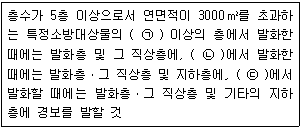
- ㉠2층, ㉡1층, ㉢지하층
- ㉠1층, ㉡2층, ㉢지하층
- ㉠2층, ㉡지하층, ㉢1층
- ㉠2층, ㉡1층, ㉢모든 층
(정답률: 78%)